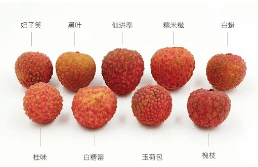
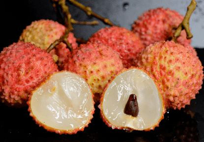

荔枝¶
亚热带常绿 气温敏感 高温高湿向阳 北纬18.5°-22° 22-25℃
高州是全国最大荔枝产区，高州荔枝享有“六个世界之最”的美誉！一是历史最久，高州种植荔枝历史达两千余年；二是面积最广，种植荔枝55万亩；三是产量最高，高州荔枝产量超20万吨，世界每十颗荔枝就有一颗来自高州；四是品种最全，荔枝品种多达三十余个；五是品质最优，“高州荔枝”是国家地理标志证明商标。六是产业最大，具备荔枝完整产业链与产业集群。
高州根子镇是“中国荔枝第一镇”，有棵前年古荔枝树，可见高州种荔枝之悠久。
Mar |
√ |
X |
X |
X |
X |
X |
X |
X |
X |
X |
Apr |
√ |
X |
√ |
√ |
√ |
X |
X |
X |
X |
X |
May |
√ |
X |
√ |
√ |
√ |
X |
X |
X |
X |
X |
Jun |
||||||||||
Jul |
||||||||||
Aug |
三月红¶
根据荔枝品种和成熟期以及生长环境的不同，荔枝可以分为特早熟品种、早熟品种、中熟品种和晚熟品种等。
三月红属于最早上市的荔枝品种，一般农历三月下旬成熟，所以有此名。三月红荔枝在广东，广西，台湾，海南等地均可以进行种植。
三月红结束后，有一种四月红的“桂花香”荔枝，目前有在海南陵水等地有种植。“桂花香”比三月红迟熟7-10天，比妃子笑早熟7天左右。
妃子笑¶
上市时间通常为5月下旬至6月上旬，注意也分早上市和晚上市的。妃子笑荔枝果皮绿中带点微红，个头大核小果肉比较多，鲜甜多汁。
屏边县具有独特气候条件使“妃子笑”荔枝提早成熟，品质上乘，果实糖酸比合理，甜而不腻，适合大众口感。“妃子笑”荔枝种植面积、产销量均居云南省第一位。
云南屏边荔枝，中国国家地理标志产品。
荔枝王¶
一般在5月底6月初成熟，个头有鸡蛋那么大。一斤在8-10个左右，果皮鲜红。
白糖罂¶
白糖罂上市时间为五月下旬，果肉乳白色，果肉爽脆，味道清甜，主要产于茂名市的高州、电白等地。
白腊¶
6月上旬左右上市，中早熟品种。果实为心形，中等大小。果皮鲜红色，薄而软。果肉蜡白色，肉厚核小。
黑叶¶
六月上中旬左右成熟，又名乌叶荔枝，肉脆，味甜，汁多，核大小不等。
糯米滋¶
个头比一般荔枝大了一圈，口感软糯，很受老人小孩喜欢，在酸味和甜味有很好得平衡，并且是典型的小核荔枝，皮薄肉厚，一颗荔枝全是果肉，吃起来相当过瘾。
6月下旬到7月上旬上市，果肉温润透光，口感柔糯滑爽、滋味清甜又浓郁。
桂味¶
市场上最常见的品种，又名桂枝、带绿。一般在七月上旬成熟，清甜中带有独特的桂花香味而得名，果大核小，果肉紧实饱满、肉质爽脆、清甜。
挂绿¶
荔枝中的“爱马仕”，产自广东增城，属于珍稀品种，市场价格百元一斤，并且很难买到，最大的特点就是有一圈绿线围绕。
上市时间为6月下旬至7月上旬，挂绿荔枝是广州增城的特产。
仙进奉¶
7月上中旬，果肉厚，蜡黄色，有蜜香味，味清甜。